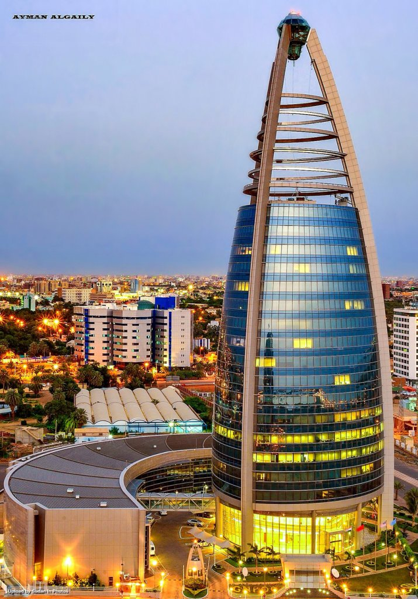

khartoum university
(shortened to UofK) (Arabic: جامعة الخرطوم) is a multi-campus, co-educational, public university located in Khartoum. It is the largest and oldest university in Sudan. UofK was founded as Gordon Memorial College in 1902 and established in 1956 when Sudan gained independence. Since that date, the University of Khartoum has been recognized as a top university and a high-ranked academic institution in Sudan and Africa.[2]
Faculties
![]()
Faculty of Law Faculty of Science Faculty of Nursing Sciences Faculty of Medicine Faculty of Pharmacy Faculty of Dentistry Faculty of Engineering Faculty of Architecture Faculty of Mathematical Sciences School of Management Studies Faculty of Economical and Social Studies Faculty of Education Faculty of Agriculture Faculty of Forestry Faculty of Animal Production Faculty of Veterinary Medicine Faculty of Medical Laboratory Sciencemmmmmmmmm nasir
School of Art
Faculty of Arts Faculty of Law Faculty of Science Faculty of Nursing Sciences Faculty of Medicine Faculty of Pharmacy Faculty of Dentistry Faculty of Engineering Faculty of Architecture Faculty of Mathematical Sciences School of Management Studies Faculty of Economical and Social Studies Faculty of Education Faculty of Agriculture Faculty of Forestry Faculty of Animal Production Faculty of Veterinary Medicine Faculty of Medical Laboratory Sciencemmmmmmmmm nasir
Faculty of Law
Faculty of Arts Faculty of Law Faculty of Science Faculty of Nursing Sciences Faculty of Medicine Faculty of Pharmacy Faculty of Dentistry Faculty of Engineering Faculty of Architecture Faculty of Mathematical Sciences School of Management Studies Faculty of Economical and Social Studies Faculty of Education Faculty of Agriculture Faculty of Forestry Faculty of Animal Production Faculty of Veterinary Medicine Faculty of Medical Laboratory Sciencemmmmmmmmm nasir
Medical College
Faculty of Arts Faculty of Law Faculty of Science Faculty of Nursing Sciences Faculty of Medicine Faculty of Pharmacy Faculty of Dentistry Faculty of Engineering Faculty of Architecture Faculty of Mathematical Sciences School of Management Studies Faculty of Economical and Social Studies Faculty of Education Faculty of Agriculture Faculty of Forestry Faculty of Animal Production Faculty of Veterinary Medicine Faculty of Medical Laboratory Sciencemmmmmmmmm nasir
School of Management
Faculty of Law Faculty of Science Faculty of Nursing Sciences Faculty of Medicine Faculty of Pharmacy Faculty of Dentistry Faculty of Engineering Faculty of Architecture Faculty of Mathematical Sciences School of Management Studies Faculty of Economical and Social Studies Faculty of Education Faculty of Agriculture Faculty of Forestry Faculty of Animal Production Faculty of Veterinary Medicine Faculty of Medical Laboratory Sciencemmmmmmmmm nasir